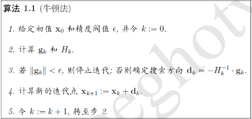

梯度下降：
\(\theta_{1}=\theta_{0}-\alpha \nabla J(\theta_0) \quad\) evaluated at \(\theta_{0}\) 计算举例：
假设目标函数为\(f(\theta)=\theta^2\)，初始值\(\theta_0=1\)，步长\(\alpha=0.5\)则 \[\theta_{1}=\theta_{0}-\alpha\nabla J(\theta_0)=\theta_{0}-\alpha*2\theta_0=1-0.5*2=0\] 在这里取\(\alpha=0.5\)正好一步到位，如果取得小得话，越靠近极小值时收敛速度越慢，牛顿法是越靠近越快。如果取较大的话则震荡或者无法收敛，比如\(\alpha = 1\)的话，则无法收敛。对于\(\alpha\)值的判断方法有： \(\theta _1 = \theta_0-\alpha*2\theta_0 = (1-2\alpha)\theta\) 则为了能够收敛需要\(-1<1 - 2\alpha<1\)得\(0<\alpha<1\)， 收敛并且不发生震荡得取值范围为\(0<\alpha<0.5\)
梯度下降与牛顿法的比较：
梯度下降是求解目标函数值的极值，比如上例就是求得\(\theta=0\)的时候，函数得到极值。牛顿法是求解目标函数值为0的时候，变量的取值。虽然解释不同，但是，公式类似，梯度下降中没有计算hessian矩阵，而是用了步长 \(\alpha\)。可以说，牛顿法的优缺点都是由hessian矩阵带来的。
梯度下降法用目标函数的一阶偏导、以负梯度方向作为搜索方向，只考虑目标函数在迭代点的局部性质。牛顿法同时考虑了目标函数的一、二阶偏导数，考虑了梯度变化趋势，因而能更合适的确定搜索方向加快收敛。
从收敛速度来看，梯度下降是线性收敛，牛顿法是二阶收敛
牛顿法： \(x_{k+1}=x_{k}-\frac{f^{\prime}\left(x_{k}\right)}{f^{\prime \prime}\left(x_{k}\right)}, \quad k=0,1, \cdots\) 对于矩阵：\(\mathbf{x}_{k+1}=\mathbf{x}_{k}-H_{k}^{-1} \cdot \mathbf{g}_{k}, \quad k=0,1, \cdots\) 其中g为一阶导数梯度向量，H为二阶导数海森矩阵。 1. 牛顿法收敛的前提是目标二阶导数必须存在，必须连续可微。如果在下降的某一处存在线性变化区域，二阶导数不存在，则无法收敛。 2. 牛顿法收敛速度为二阶，对于正定二次函数一步迭代即达最优解。比如\((x-1)^2\) 3. 牛顿法是局部收敛的，当初始点选择不当时，往往导致不收敛。 4. 牛顿法不是下降算法，当二阶海塞矩阵非正定时，不能保证产生方向是下降方向。 5. 二阶海塞矩阵必须可逆。
牛顿法步骤： 
计算举例：
假设目标函数为：\(f(x) = x^3\) 取初始值\(x_0=1\)，则\(x_1 = x_0 - \frac{3x^2}{6x}=1-\frac{1}{2}=\frac{1}{2}\)
牛顿法总结：
当目标函数是二次函数时，由于二次泰勒展开函数与原目标函数不是近似而是完全相同的二次式，海森矩阵退化成一个常数矩阵，从任一初始点出发，只需要一步即可达到极小值点，因此牛顿法是一种具有二次收敛性的算法，对于非二次函数，若函数的二次态度较强，或迭代点已进入极小点的领域，则其收敛速度也是非常快。但是，原始牛顿法由于迭代公式中没有步长因子，而是定步长迭代，对于非二次型目标函数，有时会使函数值上升，即出现\(f\left(\mathbf{x}_{k+1}\right)>f\left(\mathbf{x}_{k}\right)\)的情况，这表明牛顿法不能保证函数值的稳定下降，在严重的情况下甚至可能造成迭代结果发散。因为要计算Hessian矩阵的逆，当Hessian矩阵很稠密时，每次迭代的计算量很大。随着数据规模的增大，那么Hessian矩阵会越大，需要的存储空间会增多，计算量也会增大，有时候大到不可计算，比如深度学习中参数的计算，牛顿法不再适用。